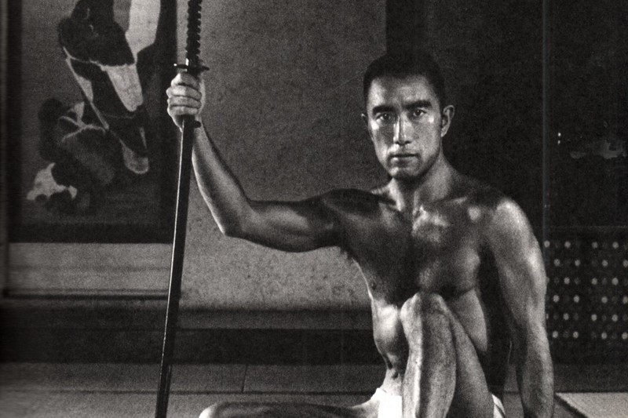

Яркий представитель второй волны послевоенной японской литературы, продолжатель традиций японского эстетизма. Трижды номинировался на Нобелевскую премию, считается одним из наиболее значительных японских писателей второй половины XX века.
Список лучших произведений
Интервью Юкио Мишимы для телеканала NHK, где он рассуждает о смерти,и вспоминает где он застал завершение Второй мировой войны
и вспоминает где он застал завершение Второй мировой войны
Планируя счастье другого, мы бессознательно приписываем ему то, о чём сами мечтаем, принимая это за осуществление его счастливых надежд.